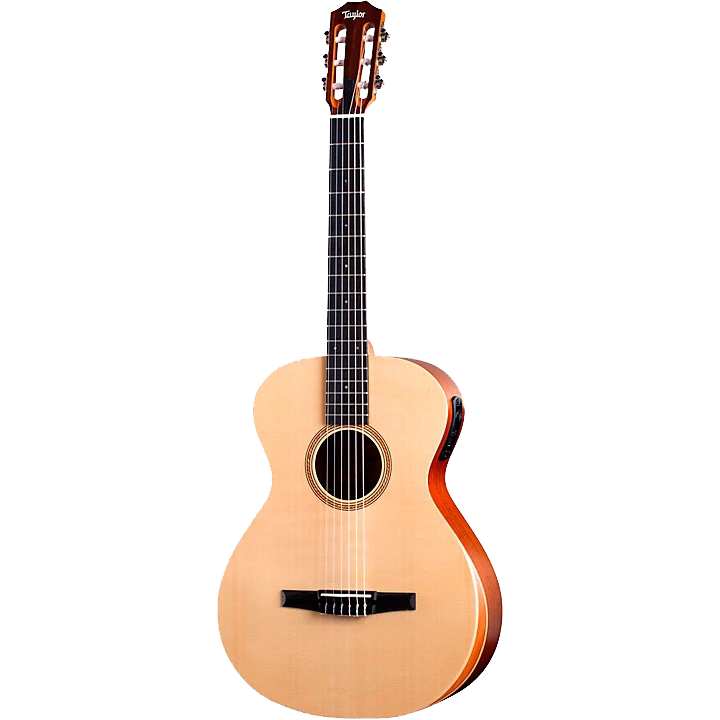
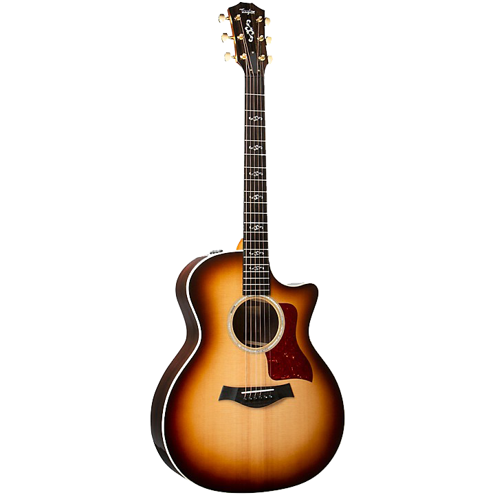
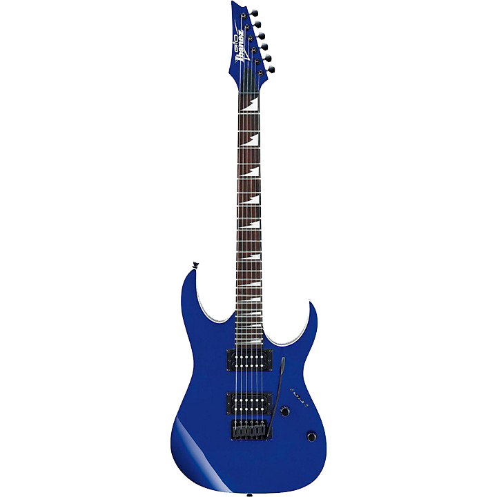
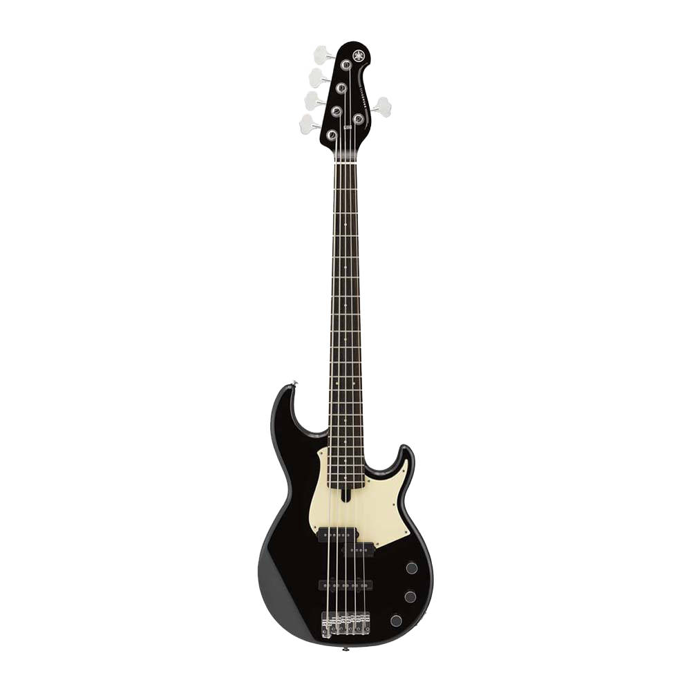

Klasik Gitarlar
Klasik gitar, klasik müzikten bossa nova ve caza kadar çok çeşitli müzik türlerini çalabilir. Mini orkestra olarak adlandırılan klasik gitar, etkileyici bir tını yelpazesini kapsar.
- Akustik Gitar
Bir gitarın tınısı gövdesi tarafından belirlenir. Çoğu insan bir gitarın içine hiç bakmamıştır ve fark etmeyebilir, ancak gitarlar aslında çok zekice tasarlanmıştır.
 - Elektro Gitar
Sesi yükseltmek için elektrik kullanılsa da, gövde ve boyun yalnızca tahta parçalarıdır. Bu enstrümanlar benzersiz şekil ve renklerde gelir.
 - Bass Gitar
Bas gitar, çoğu müzik türünde ve grupta temel enstrümandır. Birden fazla farklı rol üstlenebilirler, ancak harika bir basçının anahtarı tutarlılık ve zamanlamadır. Bir basın ana işlevi, miksajdaki alt uçları tutmak ve grubun sıkı bir ritmik kalıpta çalmasını sağlamaktır.
